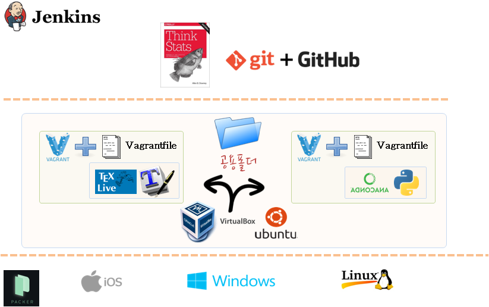

xwMOOC 컴퓨터
통계적 사고 가상컴퓨터기반 개발 환경
학습 목표
- 부랑자(Vagrant)를 활용해서 통계적 사고 개발환경을 구축한다.
1. 통계적 사고 개발환경 아키텍처
사용자 컴퓨터 운영체제 독립적으로 가상상자(VirtualBox)와 부랑자(Vagrant)를 설치한 후에 Vagrantfile에 설정된 내용에 맞춰 과학컴퓨팅(아나콘다)과 LaTeX 기본환경을 설정하고, 공용 디렉토리를 설정해서 모든 작업을 일원화한다.

2. 통계적 사고관련 툴체인
가상개발환경 구축 도구 모음
VirtualBox와 Vagrant를 설치한 후에 Vagrantfile에 파이썬과 LaTeX 설치 및 환경설정을 담은 정보를 실행한다.
3. 통계적 사고2(Think Stats2) 작업을 위한 파이썬과 LaTeX 가상컴퓨터
$install_latex = <<INSTALL
### 한글 LaTeX 설치 쉘스크립트
INSTALL
$install_python = <<INSTALL
### 파이썬 설치 쉘스크립트
INSTALL
Vagrant.configure(2) do |config|
config.vm.box = "ubuntu/trusty32"
config.vm.network "forwarded_port", guest: 8000, host: 8000, auto_correct: true
config.vm.network "forwarded_port", guest: 8888, host: 8888, auto_correct: true
config.vm.provider :virtualbox do |v|
v.memory = 2048
v.cpus = 2
end
## 파이썬
config.vm.provision :shell, inline: $install_python
config.vm.provision :shell, inline: $install_latex
config.vm.synced_folder ".", "/home/vagrant/think-stat"
end4. 통계적 사고 작업 파일
파이썬과 LaTeX 설치 Vagrantfile에 공용폴더를 지정하여 그곳에 git clone을 통해 GitHub:한글 통계적 사고, GitHub: 영문 ThinkStat2를 복제하여 작업한다.